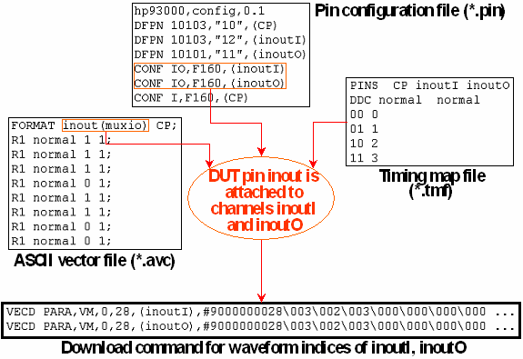

The (muxio) Mode Qualifier
You can attach more than one test system channel to one DUT pin in order to circumvent restrictions concerning the number of waveforms or edges. In the ASCII timing file and the ASCII vector file, you specify information for the DUT pin. The ASCII interface then creates the setup for the different associated channels. The creation of the timing setup for this kind of multiplexing is described in The Pin Multiplexing File (*.mux).
The (muxio) qualifier serves to inform the vector translation that a DUT pin has been multiplexed to more than one channel; it must be appended to the name of the DUT pin in question in the FORMAT line of the ASCII vector file. The vector translation then expects that two channels are defined in the pin configuration file whose names are derived from that of the DUT pin by appending the characters I and O, respectively.
The following figure displays the vector translation for the example figure in The Standard Format of the Pin Multiplexing File:
